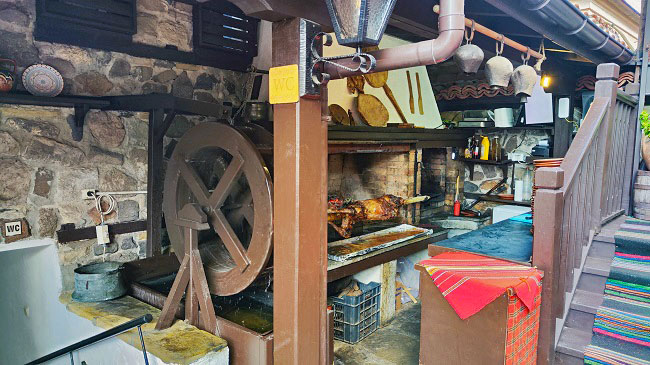
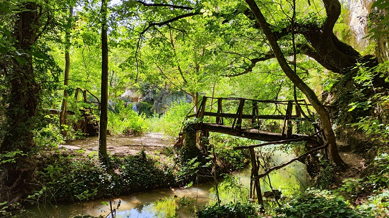
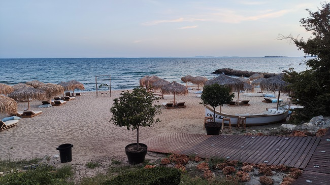

Íratkozz fel a hírlevelünkre, ingyenes utazási tippekért és trükkökért.
BULGÁRIA
Bulgária, a Balkán-félsziget délkeleti részén elhelyezkedő ország, Európában egy kulturális és
történelmi kereszteződésben található. A Fekete-tengerrel határos keleten, Romániával északon,
Szerbiával és Macedóniával északnyugaton, valamint Görögországgal és Törökországgal délen, Bulgária
rendkívül sokszínű földrajzi adottságokkal rendelkezik.
A különleges táj egyik kihagyhatatlan eleme a Fekete-tenger partvidéke, ahol homokos strandok és
történelmi városok húzódnak. Az Aranyhomok és Nesebar üdülőhelyek ideálisak a pihenésre és a
tengerparti élményekre vágyóknak. Az ország belsejében emelkednek a Balkán-hegység vonulatai, melyek
számtalan túrázási és természetjáró lehetőséget kínálnak a természet szerelmeseinek.
Bulgária városai, mint például a főváros Szófia, Plovdiv és Varna, gazdag történelemmel
rendelkeznek. Szófia modern és vibráló városként tűnik fel, ahol a modern épületek és az ókori romok
egyaránt helyet kapnak. Plovdiv, Európa legrégebbi folyamatosan lakott városa, az óvárosával és a
római amfiteátrumával kiemelkedik, míg Varna a tengerparti atmoszférájával és a kulturális
rendezvényeivel vonzza az érdeklődőket.
A bolgár kultúra mélyen gyökerezik a történelemben, és ezt megmutatja a helyi népzene, néptánc,
valamint az ortodox kereszténység vallási hagyományainak gazdagsága. Az ország számos vallási és
kulturális ünnepen vesz részt, ahol a helyiek szívesen mutatják be hagyományaikat és szokásaikat.
A gasztronómia is fontos részét képezi Bulgária vonzerejének. Az ízletes bolgár ételek között
kiemelkednek a friss zöldségek, gyümölcsök, különféle húsételek és a hagyományos sajtok. Az
országban kóstolhatók meg az egyedi ízvilágú bolgár borok, melyek kiváló minőségükről híresek.
Az országba látogatókat egyedülálló kulturális és természeti élmények várnak. A történelem, a
kultúra, a festői tájak és a barátságos helyiek együttesen teszik Bulgáriát kiváló úti céllá
azoknak, akik szeretnék felfedezni egy kevésbé ismert, ám annál lenyűgözőbb európai ország varázsát.
Az utazókat itt a múlt és a jelen találkozása várja, egy olyan helyen, ahol a hegyek, a tengerpartok
és a kulturális látnivalók egyszerre alkotják az ország egyedi karakterét.
Mikor először meséltük az ismerőseinknek, hogy Bulgáriába tervezünk menni, mindenki elsőre
értetlenül állt elöttünk, nem értették, miért pont oda szeretnénk menni. Persze, aki volt is,
mindenkinek a Napospart jutott eszébe. A család idősebb tagjai nosztalgiával gondoltqak a 80-as
évekre, mikor nászút, nyaralás okán kaptak 1 hét lehetőséget a Fekete-tenger partján pihenni.
Mi egy dologban voltunk biztosak, hogy a Napospartot elkerülve hatlamas élményekben lesz részünk.
Ismét nem csalódtunk!
Pénzneme
Leva (BGN), de terveik szerint 2025-től áttérnek az euróra.
Időeltolódás
Magyarországhoz képest +1 óra
Nyelv
Bolgár, az angolt vidéken nem beszélik, az orosz nyelvet értik inkább
Sozopol, Bulgária tengerparti gyöngyszeme, egy történelmi kisváros, amely a Fekete-tenger
partvidékén helyezkedik el. Az óvárosa a Fekete-tenger partján magasodó sziklákon épült, és
történelmi múltja egészen az ókori görög időkig vezethető vissza. Sozopol az ország egyik
legrégebbi városa, és rendkívüli atmoszférájával és kulturális örökségével vonzza az utazókat.
Az évszázadok során a várost görögök, rómaiak és bizánciak is uralmuk alatt tartották, így
gazdag kulturális hagyományokkal rendelkezik. Az egyedi stílusú házak, az óvárosba rejtett
éttermek és kávézók, valamint a tengerparti promenád kiváló lehetőségeket kínál az idősebb és
romantikusabb atmoszférára vágyó utazóknak.
Sozopol Fekete-tengeri partvidékén elhelyezkedése miatt kiváló üdülőhely. A várost övező partok
tiszta homokjai és kristálytiszta vízük ideálisak a strandolásra és a pihenésre. A helyi
tengerpartokon számos szolgáltatás található, ahol napozhatnak, vízi sportokkal próbálkozhatnak
vagy egyszerűen élvezhetik a nyugalmat és a csendet.
Sozopolban a gasztronómia is megérdemli a figyelmet. A parton található éttermek kínálják a
friss
tenger gyümölcseit, a helyi halételeket és a bolgár konyha ínyencségeit. A tengeri éttermek
mellett az óvárosban számos olyan hely található, ahol a hagyományos bolgár ételeket lehet
megkóstolni.

Sozopol, bárány sütés a helyi étteremben - Bulgária
A város kulturális élete is kiemelkedő. Sozopolban rendezik meg a híres Apollónia Fesztivált,
amely a művészetek, irodalom és zene területén kínál különleges rendezvényeket. Az események
helyi és nemzetközi művészeket vonzanak, és a várost az ország kulturális térképére helyezik.
Nagyon szuper Jazz bár, hétvégente élő fellépésekkel: Art Club Mishel.
Utazás
Repülővel kb. másfél óra alatt el lehet jutni Burgas repterére, autóval minimum 12 óra utazás.
Mi előbbit válaszottuk, mindkét fapadosnál szezonális járat, ami érthető, hiszen szeptember
végétől a tenger már kevésbé fürödhető, habár az idő még késő ősszel is csodálatos egy
kirándulásra. Reptérről transzfer vitt el a szembe lévő autókölcsönzőhöz (Top Rent A Car). Autó átadásnál ilyen
részletes
tájékoztatást még sosem kaptunk, nagyon profik voltak a srácok, biztosítással, korlátlan km
használattal egy vadi új Hyundai i20-as autót kaptunk napi 22 euróért. Volt olyan opció, hogy
nem szükséges teli tankkal visszaadnunk az autót, ezért csak az üzemanyag árát számolták fel
felár nélkül. Amire érdemes figyelni, hogy a gumikra nem vonatkozik a biztosítás és hát az utak
minősége a tengerpartot elhagyva vetekszik a vidéki magyar utakkal.
Autóval tovább Sozopolba kb. 30 perc Burgason keresztül. Sozopolba egy parthoz közeli B&B-t
vettünk ki 4 éjszakára. Ez volt az egyetlen biztos pontunk. Szeptember 6.-a után már a
bolgároknál véget ér a nyaraló szezon, folyamatosan zárnak be a helyek, az időjárás is
szeszélyesebb, mint a nyári hónapokban, így mi sem mertünk tovább tervezni, ahogy az időjárás
engedi, úgy tervezzük tovább a programunk. Be is vált a sejtésünk, az ott létünk alatt nem
igazán lehetett a tengerben fürdeni, habár meleg volt, de 2 méteres hullámok voltak és 30-40
km-es szél fújt.
Sozopol, éjszaki bár - Bulgária
Sozopol és Burgas főbb látnivalói:
Óváros és az Apollón templom
Sozopol lenyűgöző óvárosa a Fekete-tenger partján az ókori Apollón
templommal büszkélkedik, mely a város történelmi gazdagságát tükrözi. Séta a
kőutcákon, ahol a múlt és a jelen találkozik, egy különleges atmoszférát áraszt.
Szűz Mária ortodox templom
A város jelképe, a Szűz Mária templom a tengerparti panorámával
kápráztat el. Az épület részletes freskóival és az ortodox vallás kultúrájának mély
érzésével örvendezteti meg a látogatókat.
Tengerpartok
A pihenés és szórakozás szerelmeseinek ideális helyszín mind az
északi, mind pedig a déli
strand, mely kristálytiszta vízzel, finom homokkal és lenyűgöző tájakkal várja a
fürdőzőket. A tengerparti élet és a vízi sportok kedvelői itt találhatják meg a
tökéletes kikapcsolódást.
Burgas Homokszobor kiállítás
Burgas homokszobor kiállítása egyedülálló alkotásokat vonultat
fel korunk légnépszerűbb karaktereiről, amelyek a homok és a művészi kreativitás
találkozásából születtek. A lenyűgöző
alkotások olyan mesés világokat idéznek meg, mint a Star Wars, Marvel univerzum,
egyéb mesehősök.
Burgas Szabad Napok Fesztiválja
A Burgas Szabad Napok Fesztiválja keretében koncertek, utcabálok,
szabadtéri előadások és kulturális események szerveződnek. Emellett az éttermek,
kávézók és üzletek is részt vesznek a fesztiválban, kínálva különleges ajánlatokat
és programokat. Utazóként ennél egyszerűbben nem is lehetne valódi bepillantást
nyerni a helyiek életébe.
Sozopol értékelése:
Irány az ország belseje
Mivel erősen fújt a szél, tovább álltunk az ország belseje felé. Indulás előtti napon sikerült
találnunk egy helyi középkorú párnál egy apartmant, melynek különlegessége, hogy csak háztáji
alapanyagokból saját maguk készítenek reggelit és vacsorát is a vendégeiknek. A ház egy kis
faluban található Lovecs megyében, ami duplán szuper volt, mert innen csillagtúrában olyan
látványosságok érhetőek el rövid idő alatt, mint a Krushuna Falls vagy a Devetashka barlang.
Házi ízek a The Herbal Houseban - Gorsko Slivovo
Estefelé kb. 2 órás késéssel érkeztünk meg a The Herbal House apartmanházukhoz, ennek ellenére Mihail és Mariella
hihetetlen kedvességgel és frissen készített házi finomságokkal vártak bennünket. Némi unszolás
után beadták a derekukat, hogy együtt költsük el a vacsorát. Sajnos az angol nyelvet kevésbé
beszélik, mi pedig a bolgárt és az oroszt egyáltalán nem, így a google translate és a jó
közép-európai szokásos mutogatós és még hangosabban beszélős megoldásokat váltogattuk egymással.
Azért végül mindig sikerült mindenben szót értenünk, sikerült a másnapi kirándulásunk terveit
részletesen átvenni közösen, illetve kaptunk 1 üvegnyi kostolót is Mihail házi készítésű
pálinkájából. Nagyon meglepődtünk, mikor kiderült, hogy Magyarországról mi voltunk az első
vendégeik, holott már 57 másik országból, összesen 5 kontinensről voltak vendégeik. A vacsora
amúgy nem volt benne a szállás árában, csak a reggeli, így a napi extra 40 euró ellenére is úgy
döntöttünk, hogy nem hagyjuk ki a lehetőséget. Az adagokat tekintve ezt az összeget nyugodtan 4
főre is lehet számolni, így viszont már igen csak kedvezőnek mondható az ár egy 5*-os 3 fogásos
menüért.
Úgy hiszem mindent elmond a bolgár emberek barátságosságáról, hogy másnap az első helyi
látványosság megtekintésének 1. méterénél leszólitottak helyi kirándulók (persze bolgárul), hogy
kik vagyunk, honnan jöttünk és hogy tartsunk velük, járjuk be együtt a környéket. Szerencsére
németül egy fokkal könnyebben boldogulunk, mint a helyi nyelvvel, így többnyire sikerült most is
megértenünk egymást. Végül jól átbeszélgettük a fél napot, miközben több programot is közösen
néztünk meg.
Hát az ilyen élmények miatt szeretünk mi magunk utazni!
UTAZÓS TIPP:
Utazásaid során keress pár napra olyan szállásokat, ahol
helyiek látnak vendégül. Ne félj a nyelvi korlátoktól, mindig találtok megoldást, hogy
megértessétek magatok. Cserébe egészen más élménykkel gazdagodtok!
A környék kihagyhatatlan látnivalói:
Krushuna vízesés és barlangok
Lovech környékén található Krushuna vízesés a természet varázslatos
csodája, ahol a vízesés tiszta vizének csillogása és a zöldellő erdők látványa
egyaránt elbűvöl. Emellett a Krushuna barlangok is kihagyhatatlanok, ahol a
természet sziklába vésett csodái lenyűgözik a látogatókat.
Devetashka barlang
A barlang a Lovech közelében fekvő Devetaki falu közelében
helyezkedik el, és a régészeti leletek és a barlang lenyűgöző természeti szépségei
miatt vált híressé. hatalmas méretei és különleges formái miatt figyelmet érdemel. A
barlang hossza mintegy 2,5 kilométer, és magassága helyenként eléri a 60 métert. Az
óriási belső térben kialakult teraszok és üregek az évezredek során a természet
alkotásaként jöttek létre. A barlangban találhatóak olyan sziklaüregrendszerek,
amelyekben a terület korábbi
lakói, például a neolitikum és a bronzkor emberei laktak. A régészeti feltárások
során számos érdekes lelet került elő,
például kerámia, csontok és kőeszközök.
Lovech belvárosa és az Óváros
Lovech belvárosa történelmi hangulatával és évszázados emlékeivel
lenyűgözi az idelátogatókat. Az Óváros részén sétálva az antik épületek, macskaköves
utcák és a Varosha folyópart együttese időutazásra hívja a látogatókat.
Hotnitsa vízesés
A vízesés a Balkán-hegység ölelésében, Lovech közelében található és
a lenyűgöző környezet, valamint a vízesés felett magasodó kőfalak és zöldellő
növényzet összjátéka egyedi és elragadó látványt teremt. A medence körül kialakított
sétautak lehetővé teszik a látogatók számára, hogy közelről megcsodálják a vízesést,
és élvezzék a környező táj szépségét

Túra ösvény Hotnitsa vízesés mellett
Az Isteni Megváltás Szentségének Monostora
Bulgária egyik legrégebbi kolostora néhány kilométerre van Veliko
Tarnovótól, II. Bolgár Állam idején, a 13-14. században alapították. A 14. századi
bolgár főváros szellemi életében, illetve később a bolgár nép egyházi és nemzeti
függetlenségéért folytatott harcában is fontos szerepet játszott. Az
orosz-török felszabadító háború éveiben a kolostort kórházzá alakították. A
fennmaradt
építészeti részletei és a környező táj lenyűgöző mind a mai napig csodálatos
látványt nyújtanak.
Balkán-hegység környékének értékelése:
Sveti Vlas
Sveti Vlas városa egy tengerparti üdülőhely a Napospart felett, mely a homokos strandok, a kék tenger
és a modern turisztikai létesítmények tökéletes kombinációját kínálja. A tengerparti sétányon
sétálva számos étterem, üzlet és szórakozóhely várja a látogatókat, így Sveti Vlas tökéletes
választás azoknak, akik csak pihentető tengerparti nyaralásra vágynak.
Utunk utolsó állomásának ismét a tengerpartot néztük ki. Sozopolba továbbra is nagy hullámokat mutatott az
időjárás, így kis keresgélés után találtunk rá Sveti Vlasban az ONYX Beach Residence
szállodára. Általában kerüljük a nagyobb szállodaláncokat, de pár órával érkezésünk előtt
foglalva egy tengerre néző erkélyes apartmant, szuper jó árért sikerült elcsípnünk. Eddigi
tapasztalataink alapján a "fancy" szállodákban nem mindig valós a minőség, ellenben itt tényleg
minden tökéletes volt. Olyannyira, hogy egy nap kivételével a vacsoráinkat is a szálloda
éttermében ettük.

ONYX Beach Residence - Sveti Vlas
Sveti Vlas város maga a szezon végeztével amúgy egészen kihalt lett, így ez esetben nem magát a települést vagy környékét, hanem a szállodát értékeljük.
Sveti Vlas értékelése:
Ha tetszenek az úti leírásaink vagy csak szeretnéd Te is magad felfedezni a világot, eljutni
olyan helyekre, melyekre a hagyományos utazási irodák nem visznek, esetleg nem tudod hogyan állj
neki a megszerevezésnek vagy csak időd nincs rá, keress minket bátran!
Te elmondod hova és hogyan, mi pedig megszervezzük álmaid kalandját!